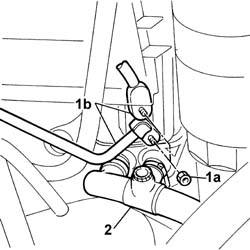
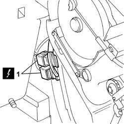
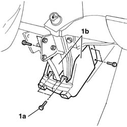
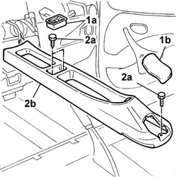
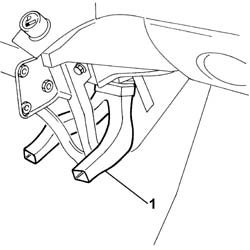
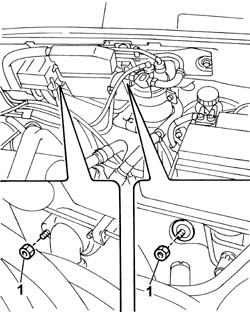
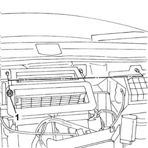

5040C12 air conditioner housing - r r with facia disconnected
- Path
- Procedures > 50 AUXILIARY UNITS > 5040 AIR CONDITIONING CASING AND COMPONENTS > 5040C air conditioner box and components > 5040C12 air conditioner housing - r r with facia disconnected
- Kind
- repair procedure (removal / refitting; the operation number is the code)
- Applies to
- all engines; all production periods
- Interactive page
- https://sloeber94.github.io/elrnDB-fDbl/en/#/2584836
Applies to: all engines; all production periods
 Removing
Removing
 Refitting
RefittingOp. 7055B54 PROTECTION/GUARD UNDER ENGINE - R.R.
Op. 5040A10 AIR CONDITIONING REFRIGERANT CIRCUIT - DRYING AND REPRESSURIZING
Fit a suitable container for coolant recovery.
Disconnect the lower radiator pipe and drain the engine coolant into the container.
After completing draining, reconnect the radiator's bottom pipe.
1. Undo the fixing nuts (1a) and move aside the high and low pressure pipes (1b) from the compressor to the air conditioner case.
2. Disconnect the water supply and return pipes to the air conditioner case.

Applies to: all engines; all production periods
1. Disconnect the electrical connection.
 | Name | Connector |
|---|---|---|
1 | Front/air conditioning - heater coupling |

Applies to: all engines; all production periods
1. Undo the bolts (1a) and remove the side guards (1b) of the air diffuser on the air conditioner case.

Applies to: all engines; all production periods
1. Remove the coin holder (1a) and the protective cap (1b) behind the handbrake lever.
2. Undo the bolts (2a) and push the tunnel backwards (2b).

Applies to: all engines; all production periods
1. Remove the air diffuser.

Applies to: all engines; all production periods
1. Undo the nuts securing the air conditioner case in the engine compartment.

Applies to: all engines; all production periods
1. Undo the nuts securing the air conditioner case on the interior compartment side.

Applies to: all engines; all production periods
Carefully remove the air conditioner unit.
Applies to: all engines; all production periods
Refitting
RemovingFit the air conditioner unit.
Tighten the nuts securing the air conditioner case on the interior compartment side and engine side.
Fit the air diffuser.
Refit the central tunnel and secure it with the fixing bolts.
Fit the side guards of the air diffuser on the air conditioner case.
Connect the electrical connection.
| Name | Connector |
|---|---|---|
- | Front/air conditioning - heater coupling |
Connect the water supply and return pipes to the air conditioner case and secure them with new retaining bands.
Refit the high and low pressure pipes from the compressor to the air conditioner case and tighten the nuts.
Op. 1040A32 HOSE CONNECTING FUEL FILLER PIPE TO TANK - R.R.
Op. 1088A30 ENGINE COOLING SYSTEM - DRAIN AND REFILL CIRCUIT WITH BLEED AIR
Op. 5040A10 AIR CONDITIONING REFRIGERANT CIRCUIT - DRYING AND REPRESSURIZING
Topics linked from this page (5)
- 1040A32 fuel filler pipe union sleeve - r + r
- 1088A30 ENGINE COOLING SYSTEM - draining and refilling circuit and bleeding air
- 5040A10 Air conditioning refrigerant CIRCUIT - Draining and Refilling
- 7055B54 under-engine guard - r r
- D008 FRONT/AIR CONDITIONING-HEATER COUPLING